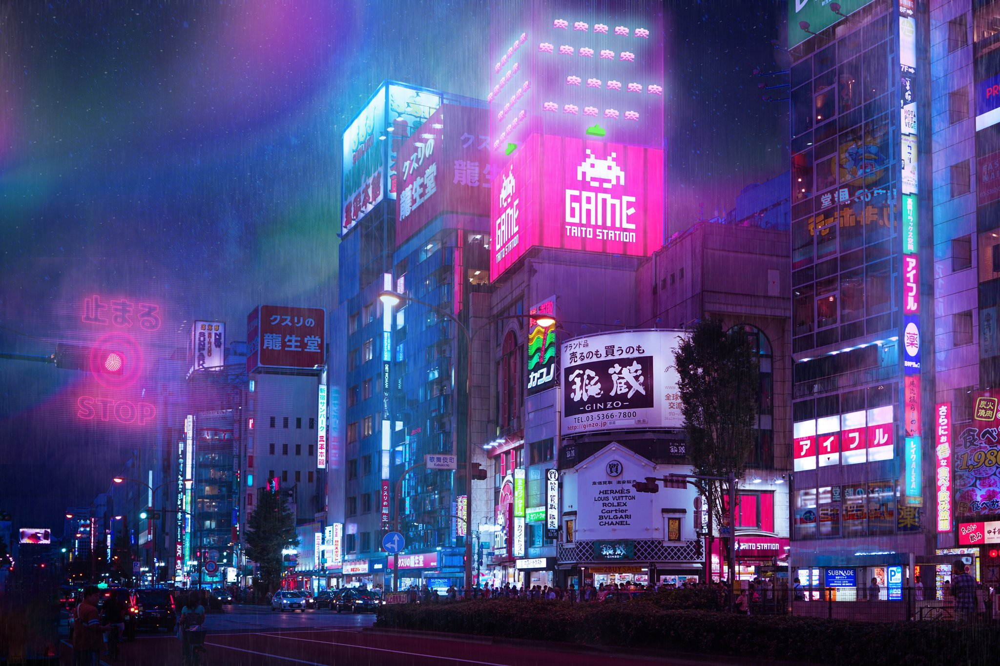

Дата і місце народження: 25 червня, 2004 рік, м.Кривий Ріг
Освіта: Гімназія №95 м.Кривий Ріг
Хоббі:
Улюблені книги:
Токіо - це захоплююче місто, що розташоване на східному узбережжі Японії. Воно є одним з найбільших і найбільш населених міст у світі. Токіо вражає своєю різноманітністю і контрастами: тут ви знайдете старовинні храми і сучасні небоскреби, традиційну японську культуру і глобальну поп-культуру, спокійні сади і жваві торгові вулиці. Місто славиться своєю гастрономією, де можна спробувати найрізноманітніші страви, такі як суші, рамен, темпура та багато інших. Токіо також є мекою для шопінгу, де ви зможете знайти відомі бренди, антикваріат та авангардну моду. Місто відоме своєю інноваційною технологічною сферою, включаючи електроніку, робототехніку та інформаційні технології. Токіо також володіє вражаючою системою громадського транспорту, яка забезпечує зручність переміщення по місту. Місцями відпочинку і культурні скарби включають Киото, Асакусу, Меїдзі-дзінгу та Палац Імператора. В цьому місті завжди відбувається щось цікаве і захоплююче, що робить Токіо одним із найцікавіших та енергійних міст світу.
